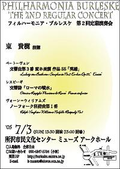

フィルハーモニア・ブルレスケ 第2回定期演奏会
2005年7月3日(日) 於：所沢市民文化センターMUSE アークホール
指揮：東貴樹
ヴォーン・ウィリアムズ ノーフォーク狂詩曲第1番
レスピーギ 交響詩『ローマの噴水』
ベートーヴェン 交響曲第3番『英雄』
曲目解説
ヴォーン・ウィリアムズ ノーフォーク狂詩曲第1番
レイフ・ヴォーン＝ウィリアムズはホルストやエルガー、ブリテンとならび、近代イギリスを代表する作曲家である。彼が生涯、最も力を注いだ音楽ジャンルは交響曲であり、9曲の作品が残されているが、それと同時に母国イギリスの民謡の採集を精力的に行い、ホルストなどに影響を与えたほか、イギリス民舞・民謡協会の会長も務めた。民謡を素材としたヴォーン＝ウィリアムズの代表作といえば「グリーン・スリーヴスによる幻想曲」だが、本日取り上げる「ノーフォーク狂詩曲第１番」も演奏される機会こそ少ないものの、グリーン・スリーヴスに劣らず、素朴で味わい深い英国民族音楽を楽しむことのできる佳作である。この曲は"The Captain's Apprentice"、"A Bold Young Sailor"、"On Board a 98"の3曲の民謡をテーマとしている。
ノーフォーク狂詩曲は、当初はノーフォーク交響曲として構想されたが、発表時には「3つのノーフォーク狂詩曲」としてまとめられた。しかし第2番と第3番は作曲者によって破棄され、現在は作曲者の原版としてはこの第1番のみが残されている。
レスピーギ 交響詩『ローマの噴水』
近代イタリアの作曲家オットリーノ・レスピーギは、いわゆる「ローマ三部作」で世界的に知られる作曲家となったが、今回取り上げる「ローマの噴水」は、「ローマの松」「ローマの祭」に先駆けた第1作にあたる。ボローニャ生まれのレスピーギがローマの景観と長い歴史に見せられて作曲したこの3部作は全て「交響詩」の名が冠されているが、これは交響詩を数多く書いたリヒャルト・シュトラウスを意識してのことであり、どれも大変描写的で華々しい曲となっている。レスピーギは管弦楽法をロシアでリムスキー＝コルサコフに、またドイツでブルッフに師事したが、彼の作風は特に前者の影響を大きく受けている（ちなみにヴォーン＝ウィリアムズとはブルッフ門下の同窓である）。この「ローマの噴水」もご他聞にもれず、リムスキー＝コルサコフ譲りの多彩できらびやかなオーケストレーションが施されている。タイトルの通り、ローマの4つの噴水を描いた作品で、曲全体は時系列順に「夜明けのジュリアの谷の噴水」、「朝のトリトーネの噴水」、「昼のトレヴィの噴水」、「黄昏のメディチ荘の噴水」の4つの部分が切れ目なく演奏される。
ベートーヴェン 交響曲第3番『英雄』
ルートヴィヒ・ヴァン・ベートーヴェンの交響曲第３番は、作曲者自身によりイタリア語で"Sinfonia eroica (英雄交響曲)"と標題がつけられており、元はナポレオンに献呈するつもりで書かれた曲であった。当時としては先進的な共和主義者であったベートーヴェンが、フランス革命の英雄ナポレオンに共感して作曲したが、彼が皇帝に即位したことを聞いて激怒し献呈を取りやめた。表紙の献辞を荒々しくペンで消して「ある英雄の思い出のために」と書き加えられたという有名な逸話が残されている。
この曲はベートーヴェンの交響曲を語る上のみならず、交響曲というジャンルの歴史を語る上でも特筆すべきものとなった。ベートーヴェンの第１、第２交響曲は、ハイドンやモーツァルトの影響が強く、ベートーヴェンの自己主張が聞かれるのは第３交響曲からであるといわれる。現にこの交響曲は、これまでの交響曲とは一線を画した特徴が多く見受けられる。まず指摘されるのは曲全体の規模であり、それまでの交響曲が30分程度までであったのに対してこの曲は50分強と、当時としては異例の長さであった。そのほかにも第２楽章を葬送行進曲としたこと、第３楽章でトリオを取り入れたこと、第４楽章を変奏曲形式で書いたことなど、随所にベートーヴェンの独創的な取り組みが見られる。この曲の作曲から、ベートーヴェンの創作は中期を迎えたといわれているが、ベートーヴェン自身も第９を除いて最もその出来に満足していたのが、この第３番であったと伝えられており、創作活動の転換点として音楽史的にも作曲者にとっても重要な曲となったことが伺える。
フライヤー
